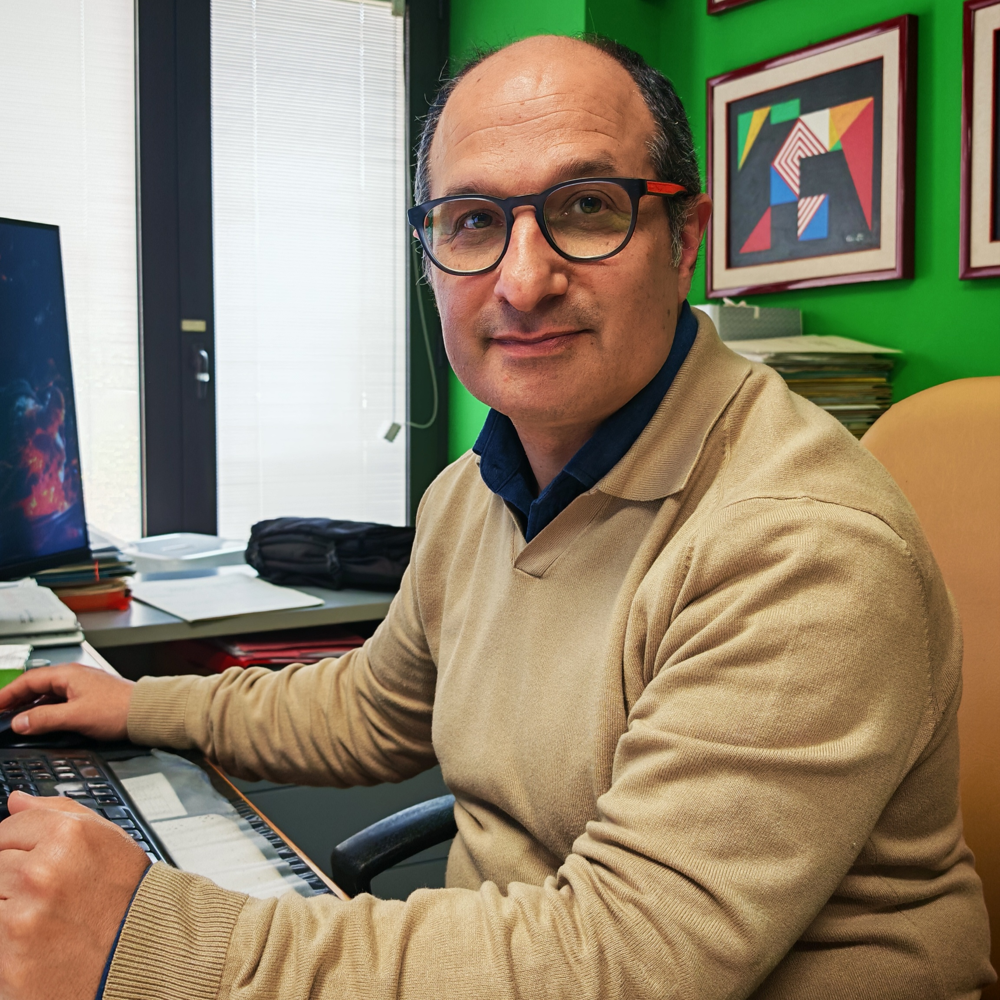
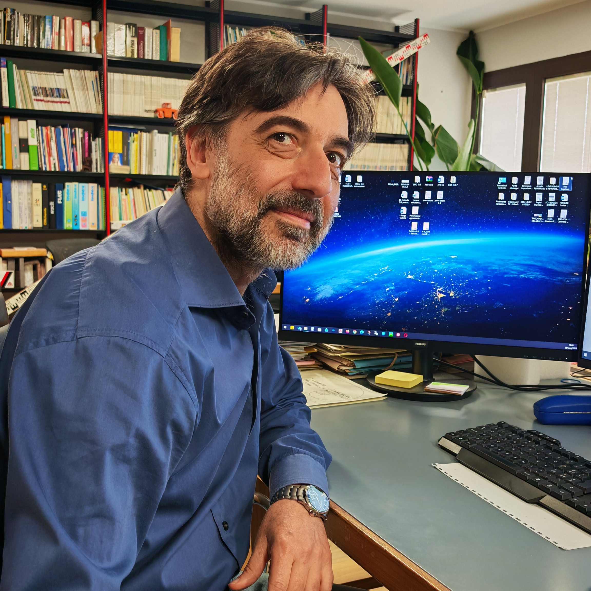
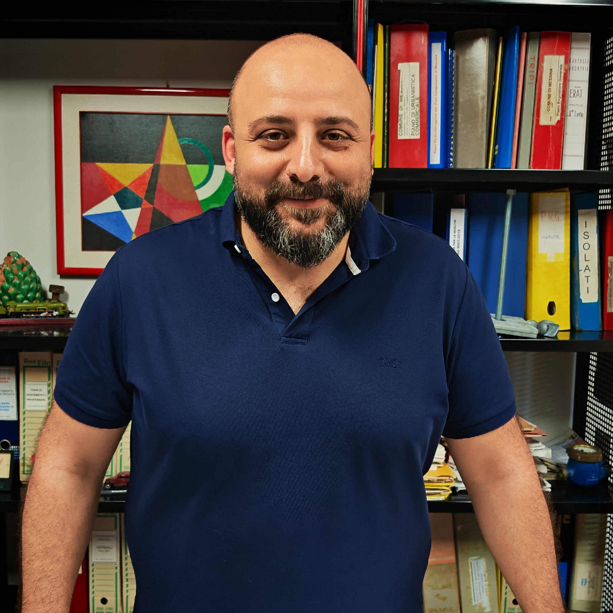
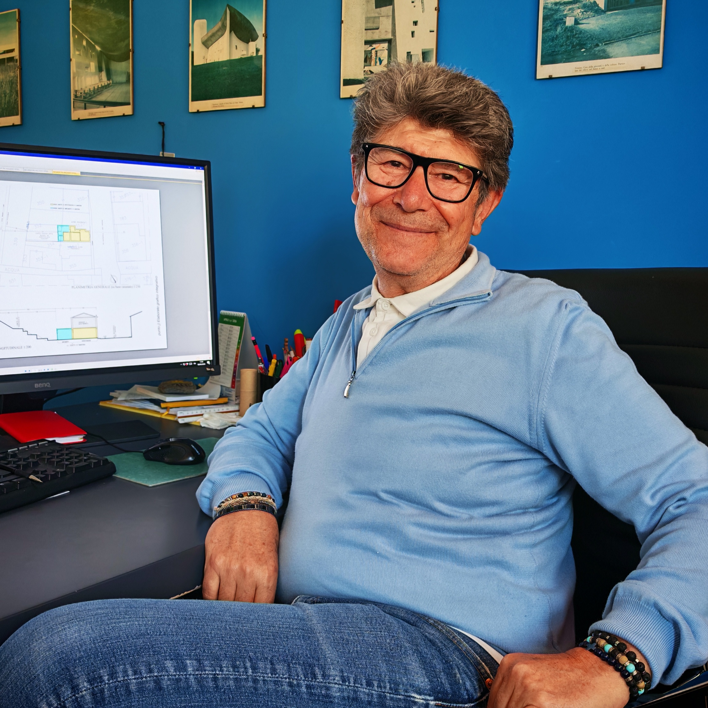
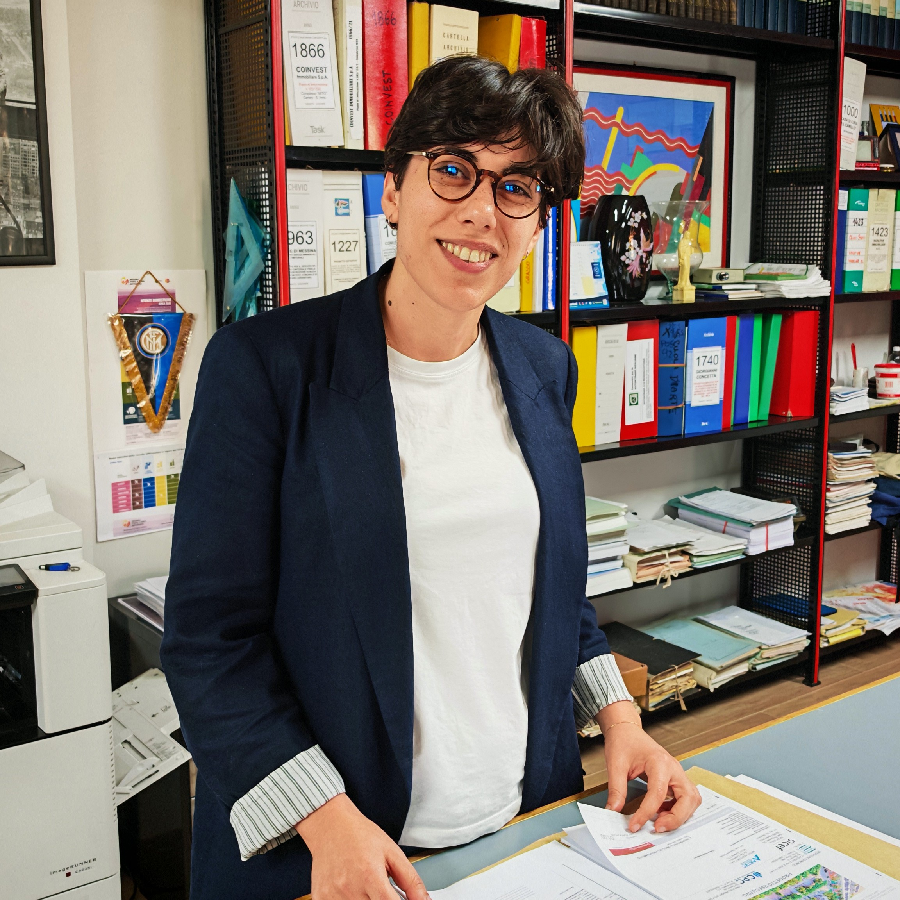
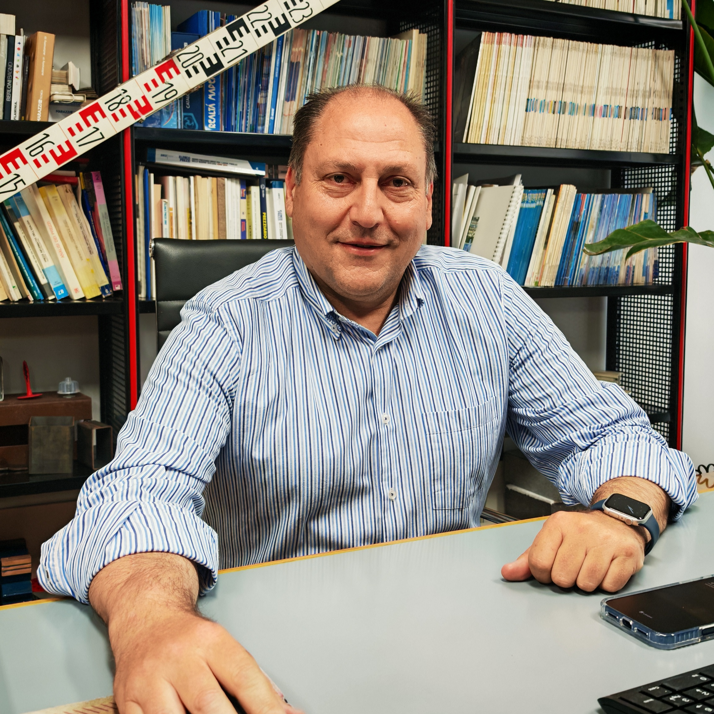

Lo Studio Taranto-Vancheri, fondato nel 1985, è una realtà consolidata nel settore dell'ingegneria e dell'architettura con sede a Messina. Da oltre 40 anni operiamo con competenza e affidabilità sia nel settore pubblico che privato, offrendo servizi tecnici completi e integrati.
Lo studio è composto da ingegneri, architetti, geometri e disegnatori, ed opera in ambito di ingegneria civile, architettura e urbanistica, seguendo i progetti dalla fase preliminare fino alla direzione dei lavori e ai collaudi finali.
Ogni progetto viene sviluppato con un approccio integrato, che unisce competenze tecniche, esperienza sul campo e costante aggiornamento normativo, con l'obiettivo di fornire soluzioni funzionali, sostenibili e su misura, garantendo qualità, sicurezza e rispetto dei tempi.

Socio
Nato a Giarre (CT) nel 1959, laureato in Ingegneria Civile Edile nel 1985 presso l'Università degli Studi di Palermo. Iscritto all'Ordine degli Ingegneri di Messina al n. 1238. Consigliere dell'Ordine degli Ingegneri di Messina (1993–2000 e 2013–2017), Amministratore Delegato di ATO ME 3 S.p.A. (2002–2006), Consulente tecnico-scientifico dell'Assemblea Regionale Siciliana (2013–2017). Oltre 40 anni di attività libero professionale nel settore pubblico e privato.

Socio
Nato a Messina nel 1972, laureato in Ingegneria Civile Edile nel 1998 presso l'Università degli Studi di Messina. Iscritto all'Ordine degli Ingegneri di Messina al n. 2232. Libero professionista dal 1998, consulente tecnico di istituti bancari, imprese di costruzioni e aziende commerciali.

Socio
Nato a Messina nel 1987, laureato in Architettura nel 2015 presso l'Università degli Studi Mediterranea di Reggio Calabria. Iscritto all'Ordine degli Architetti P.P.C. di Messina al n. 2230 dal 19 luglio 2016. Consigliere dell'Ordine degli Architetti di Messina (2021–2025). Specializzato in restauro conservativo, interior design di spazi residenziali e commerciali, relazioni paesaggistiche.





